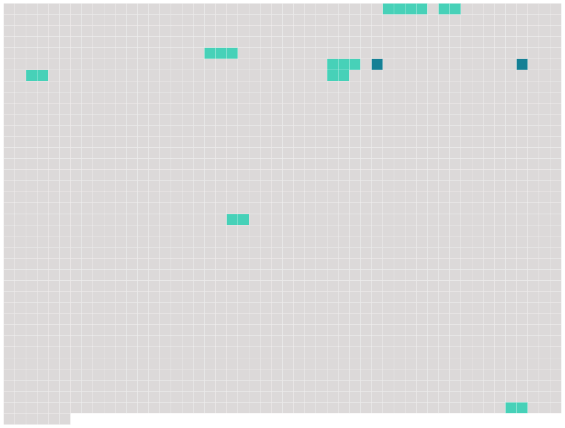

Longueur nb maillons : 10 mentions |
|
— L'hospitalité pour moi et mes camarades, des princes et des princesses, des Léandres et des Isabelles, des docteurs et des capitaines qui se promènent de bourgs en villes sur [le chariot de Thespis] , [lequel chariot] , traîné par des bœufs à la manière antique, est maintenant embourbé à quelques pas de votre château. [6 phrases]
Mis au fait de ce qui se passait, il alluma une lanterne, et tous trois se dirigèrent vers [la charrette embourbée] [2 phrases]
Ce renfort inattendu, et surtout l'expérience de Pierre, eurent bientôt fait franchir le mauvais pas [au lourd chariot] , [qui] , dirigé sur un terrain plus ferme, atteignit le château, [passa] sous la voûte ogivale et [fut rangé] dans la cour. Les bœufs dételés allèrent prendre place à l'écurie à côté du bidet blanc ; les comédiennes sautèrent à bas de [la charrette] , faisant bouffer leurs jupes fripées, et montèrent, guidées par Sigognac, dans la salle à manger, la pièce la plus habitable de la maison. [16 phrases] Ne trouvant pas la lueur de la lampe suffisamment rayonnante, le Matamore était allé chercher dans [la charrette] deux flambeaux de théâtre, en bois entouré de papier doré et munis chacun de plusieurs bougies, renfort qui produisit une illumination assez magnifique. [18 phrases]
Sans doute tout cela n'était pas de la première fraîcheur, l'usage avait miroité par places le velours de la jupe, la toile de Frise était un peu fripée, les dentelles eussent paru rousses au grand jour ; les broderies de l'écharpe, à les regarder de près, rougissaient et trahissaient le clinquant ; plusieurs aiguillettes avaient perdu leurs ferrets, et la passementerie éraillée des brandebourgs se défilait par endroits ; les plumes énervées battaient flasquement sur les bords du feutre, les cheveux étaient un peu défrisés, et quelques fétus de paille, ramassés dans [la charrette] , se mêlaient assez pauvrement à leur opulence. |
 |
Il est possible de télécharger la ressource sur la page Ortolang |
Si vous avez des questions ou vous voyez des erreurs, merci d'envoyer un mail à silvia.federzoni89@gmail.com |